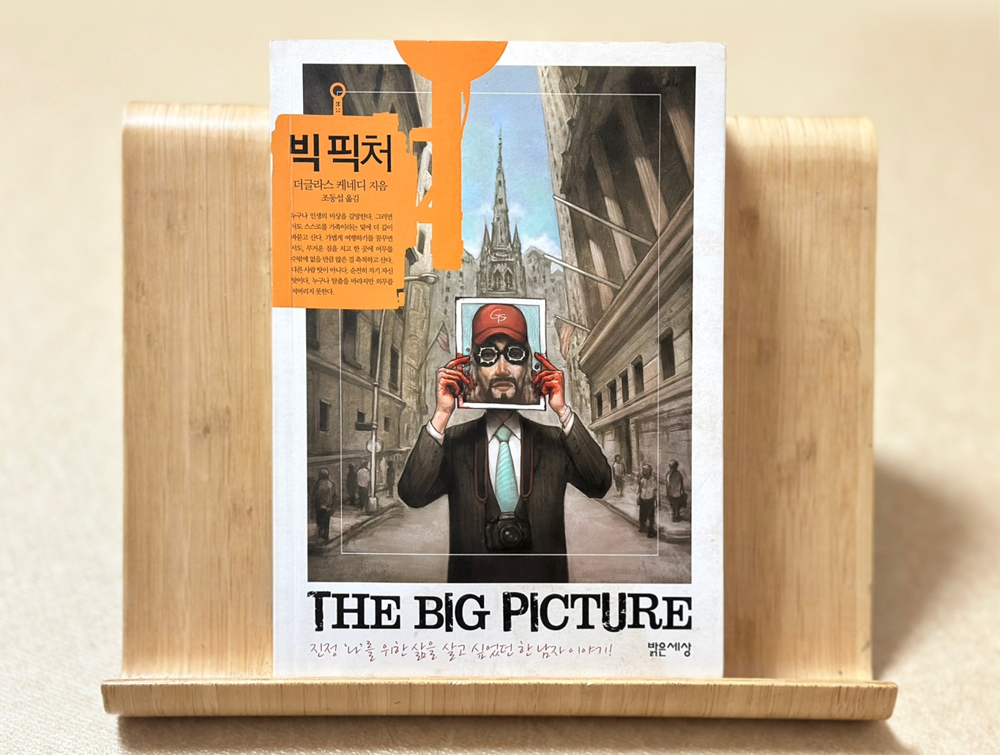

더글러스 케네디의 『빅 픽처』: 허상을 벗고 진짜 삶을 찾는 여정
1997년 발표된 더글러스 케네디의 소설 빅 픽처(The Big Picture)는 물질적 성공과 내적 정체성의 흔들림을 그려낸 작품입니다. 1990년대 미국 세대의 허영을 배경으로, 완벽해 보이는 삶의 이면에 숨은 공허함과 폭발적 자아 해방을 그려내며 독자들에게 "진정한 행복이란 무엇인가"라는 질문을 던집니다.

줄거리: 완벽한 삶의 균열
주인공 벤 브래드퍼드는 뉴욕의 엘리트 변호사로, 명성과 부를 모두 손에 쥔 인생의 승리자처럼 보입니다. 그러나 그는 아버지의 기대에 맞춰 포기한 사진가의 꿈, 아내와의 냉담한 관계, 자녀와의 단절된 유대감 속에서 점차 고립감에 빠집니다. 우발적인 살인 사건을 계기로, 그는 피해자의 신분을 도용해 몬태나로 도피하며 새로운 삶을 시작합니다. 광활한 자연 속에서 사진작가로 재탄생하는 듯 보이지만, 과거의 유령은 그를 끝없이 추적합니다.
주제: 허상과 진실의 대립
- 물질주의의 덫: "월급의 30%는 명품 옷, 50%는 교외 저택 유지비"라는 벤의 내레이션은 외적 성공의 허구성을 드러냅니다. 사회가 정의한 '성공'이 개인의 정체성을 잠식하는 과정이 비극적으로 묘사됩니다.
- 정체성의 재구성: 신분 도용은 범죄이자 자아 탐구의 은유입니다. 몬태나에서의 삶은 뉴욕의 삭막함과 대비되며, "진짜 나"를 찾기 위한 몸부림으로 읽힙니다.
- 과거의 그림자: "도망칠 수 없는 것은 자신"이라는 메시지는 범죄 서스펜스를 넘어 철학적 성찰로 승화됩니다.
독서 포인트
- 현대인의 공감 코드: 업무 스트레스, 가족 관계의 균열, 꿈과 현실의 괴리 등 오늘날에도 통하는 문제를 파고듭니다.
- 장르의 경계 허물기: 범죄 스릴러와 문학적 심리 묘사가 결합되어 단순한 오락을 넘어 사유를 자극합니다.
- 생존 본능에 대한 탐구: "살아남기 위해 얼마나 극단적이 될 수 있는가?"라는 질문은 독자로 하여금 자신의 삶을 돌아보게 합니다.
작가 소개: 더글러스 케네디
뉴욕 태생으로 파리를 기반으로 활동하는 소설가로 소설 공장장이라는 별명을 붙여도 될만큼 다작을 하는 작가입니다. 특종(The Pursuit of Happiness), 그 여인의 선택(The Woman in the Fifth) 등 인간 내면의 어둠과 사회적 억압을 교차시키는 작품들을 발표해왔습니다. 그의 글은 세태 풍자와 인물 심리의 깊이가 특징이며, 빅 픽쳐는 대표작으로 꼽힙니다. 미국인이지만 프랑스에서 인기가 높은 작가이며, 이 소설은 프랑스에서 영화화 되기도 했습니다.
빅 픽처 영화
빅 픽처 다시보기 | 키노라이츠 #리뷰 #평가
단 한번의 실수! 우발적 살인이 부른 인생 반전 파리의 성공한 변호사, 높은 연봉과 멋진 차, 그림 같은 집. 아름다운 아내와 동화 속에서 튀어나온 듯 귀여운 아이들. 나는 마치 패션 화보에 나
m.kinolights.com
맺음말: 진짜 삶을 위한 사유
빅 픽쳐는 단순한 도피 이야기가 아닌, 우리 모두가 얼마나 많은 가면을 쓰고 살아가는지, 그리고 그 가면 아래 감춰진 진실의 얼굴을 마주할 용기가 있는지 질문합니다. 화려한 SNS 피드 속에서 자신을 포장하는 현대인이라면, 벤의 이야기에서 무언가 격렬한 공명을 느낄 것입니다. 이 책은 독자로 하여금 삶의 빅 픽쳐를 다시 그려보도록 초대합니다. 과연 당신의 그림에는 어떤 색채가 채워져 있을까요?